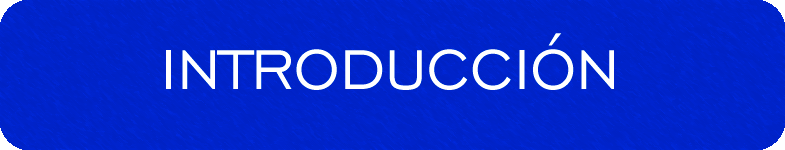
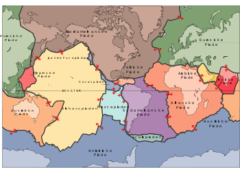

Las placas tectónicas o placas litosféricas son planchas rígidas de roca sólida flotando sobre una capa semifluida (astenosfera). La litosfera o el conjunto de placas que forman la litosfera flotando sobre la astenosfera, son las placas tectónicas. Cada placa de la litosfera que flota sobre la astenosfera es una placa tectónica diferente. ¿Fácil NO?.

Ya sabemos que las placas tectonicas, al estar sobre la astenosfera, se mueven a una velocidad de unos 2,5Km anuales (parecido a la velocidad a la que nos crecen las uñas).
Pero el movimiento de todas las placas tectonicas no es en la misma dirección, y esto provoca que choquen y rocen unas contra otras, llegando el choque, a veces, hasta la superficie de la tierra en forma de terremotos, formación de montañas e incluso tsunamis si son choques entre placas oceánicas.
Todos estos fenómenos se producen con mucha más intensidad en los bordes de las placas tectónicas.
El movimiento de las placas lo estudia la llamada Tectonica de Placas, el problema es que este movimiento muchas veces es impredecible. Pero algo sabemos y es como se pueden mover.
Pero el movimiento de todas las placas tectonicas no es en la misma dirección, y esto provoca que choquen y rocen unas contra otras, llegando el choque, a veces, hasta la superficie de la tierra en forma de terremotos, formación de montañas e incluso tsunamis si son choques entre placas oceánicas.
Todos estos fenómenos se producen con mucha más intensidad en los bordes de las placas tectónicas.
El movimiento de las placas lo estudia la llamada Tectonica de Placas, el problema es que este movimiento muchas veces es impredecible. Pero algo sabemos y es como se pueden mover.
Escuela Nacional de Estudios Superiores
Unidad Morelia
Antigua Carretera a Pátzcuaro No. 8701
Col. Ex Hacienda de San José de la Huerta
C.P. 58190 Morelia, Michoacán, México
Teléfonos:
Desde Morelia (443) 6-89-35-00